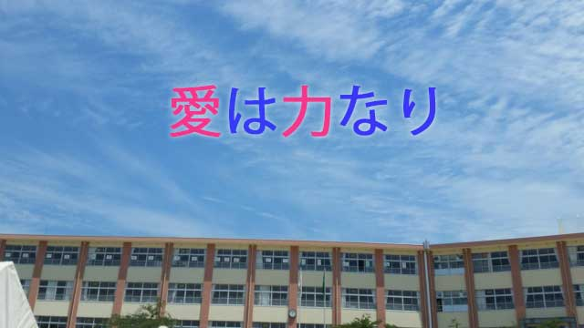

今日、とある私立高校で先生方の前でお話する機会を得た。学校も新学期を迎え新年度の体制づくりに大ワラワの中、新任の先生たちの研修も兼ねてひとつ「教師の心がまえ」を説いて欲しいということだった。
皆さん多忙の中での研修でもあり、私としてはあまり肩ひじの張った話は避けもっぱら自分自身の経験談（失敗も含めて）を話そうと思った。
結果的にジョークやユーモアをはさんだ話は成功したと思う。終了後ほぼ全員の先生が感想を渡しながら「参考になりました」「面白かったです。またお話していただきたい」と口々に語ってくれたからだ。（お世辞もあるかも知れないが）
学校としてはアクティブラーニングや授業技術などもっと突っ込んだ話を期待していたのかも知れない。しかし50分という短い時間でもあり私としてはそれより教師として教壇に立つ人たちにぜひとも持ち続けてもらいたい姿勢について話したかった。
テクニカルな技法や具体的な生徒指導よりもそのほうが大切だと思ったからだ。
では私がもっとも伝えたかったことは何か。教師として持ち続けて欲しい姿勢とは何か。
それは生徒を丸ごと愛するということである。
勉強ができる、できない。態度が良い悪い。言うことを聞く聞かない。それらに拘らず差別なく区別なく一律に平等に愛して欲しいということである。
「〇〇だから愛する」は条件つきの愛であり本当の愛ではない。
私はこれができれば教師として十分任務を果たしたと言えると思う。
私も小学校そして中学校時代そのような無条件の愛に満ちた教師に出会った。彼らは私たちがどんな「悪いこと」をしても決して見放さなかった。今でもその頃のことを思い出すと胸が暖かくなる。
親の愛情と違って教師の「愛」は射程が長い。何十年経っても彼らが子どもに注いだ無償の愛は、色あせることなく人生の困難を乗り超える力となってくれる。
まさに愛は力だとつくづく思う。
「教師の愛」と言うと人は金八先生のようなドラマチックな物語を想像するかも知れない。しかし実際はもっと地味な、ありふれた日常の中にそれは現れるものだ。
たとえば教師がさり気なく言ったひと言かも知れない。ほんの小さなホメ言葉が生徒のその後の人生を大きく左右することは、珍しいことではない。
たとえば私は次のようなエピソードをよく思い出す。
ある死刑囚の話
それは一人の死刑囚の話だ。
時代がまだ昭和だった頃、その男は幼いとき母を失くし学校でもどこでも友人に恵まれず成績も悪く自暴自棄な生活を送っていた。やがて悪事に染まり少年院に入ることになる。彼の転落の人生はその後も続き、職も金もなく飢えに耐え兼ねたある日一軒の農家に押し入る。
折り悪く家人に見つかり争いとなって相手を殺してしまう。そうして彼は死刑囚となったのだ。（強盗殺人）
ところでこの男は独房で一つの記憶を思い出す。それは何一つ楽しいことのなかった人生でたったひとつの温かい記憶、中学で図工の先生に「絵は下手だが構図がうまい」とほめられた記憶だった。
彼は意を決してその恩師に手紙を書いた。すると返事が来た。手紙には絵が入っていた。恐らくその先生は彼の芸術的天分を見抜いていたのかも知れない。
男は感激しこれが励みとなって創作活動を始める。男が選んだのは絵ではなく短歌だったが。
その後男は多くの詩作に励み新聞にも投稿し、いつしか彼の膨大な短歌は多くの読者に感動を与えるまでになった。
こうして彼は「人間性」を取り戻し自らの罪を深く詫び、また多くの人―特に恩師―に感謝しながら刑の執行を受けた。
30年と少しという短い人生だったが、その終局において彼の心境はさわやかだったのではないか。そのことは彼の残した手紙や関係者の資料からもうかがうことできる。
そして大切なことは、彼がなぜ獄中で恩師のことを思い出したのかということだ。
それは教師の愛が彼の無意識下にあっても脈々と生きていたからだ。そしてその愛が彼を創作活動に向かわしめ、魂の更生に至らしめた。
彼は中学時代成績はビリだったという。
ふつう教師はあまりにも「できない」生徒に対しては「どうしようもない奴だ」と心のどこかで見切りがちだ。教師という権威者（生徒にとって）がいったん「ダメな奴」というレッテルを貼ったら、生徒はますますダメになるしかない。どうしてもそうなる。
しかしこの教師は違った。「どの子にも何らかの光るものはある。」だからどんな子も丸ごとその存在を受け入れ愛する。恐らくそんな信念があったのだろう。
先に芸術的天分を見抜いていたかも…と言ったが実際ほめる所が見当たらず「構図がうまい」と強いて言っただけなのかも知れない。
いずれにしてもこの教師の「愛の力」が、固く冷えた死刑囚の心を溶かしたのである。
心を溶かしただけでなく創作意欲に火をつけ眠っている才能まで開花させた。人間らしい心まで回復させた。
刑場に向かう男は満足だったに違いない。
なぜなら獄中で彼はまさに第2の人生を生き直すことができたからだ。
教師の愛はこのようなことができるのである。
私が研修で伝えたかったのもこのことだった。ただ、実際には「教師の愛」というナマの言葉を使ったわけではなかったから本当に伝わったか少し不安もあった。
しかし今、研修アンケートをペラペラめくっていると何人もが生徒に寄り添う大切さを感じたと書いていて、その内の一人の先生（女性）が生徒指導で大切なことという項目に「愛するしか道はないと腹をくくっています」と記してあった。
どうやら真意は伝わったようだ。
若い先生たちに期待したい。